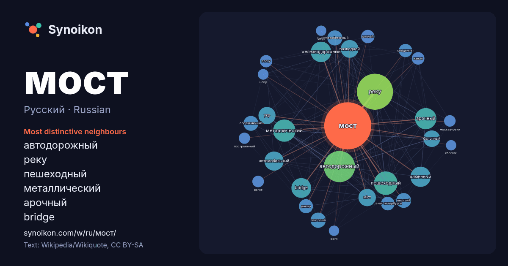

Русский · Russian · word of the day list
мост
“bridge” · The words found around it in 1885 instances from Russian Wikipedia, Wikiquote.

Most distinctive neighbours
- автодорожный 154×
- реку 132×
- пешеходный 86×
- металлический 76×
- арочный 72×
- bridge 62×
- железнодорожный 56×
- каменный 56×
- автомобильный 54×
- разводной 50×
- міст 48×
- укр 46×
- балочный 45×
- вантовый 38×
- железобетонный 37×
- висячий 36×
- соединяющий 35×
- соединяет 26×
- днепр 26×
- волгу 24×
× = how many times more often than in general Russian Wikipedia text.
Most frequent neighbours
- реку 207
- автодорожный 155
- пешеходный 88
- металлический 79
- арочный 72
- железнодорожный 66
- каменный 65
- bridge 62
- название 59
- автомобильный 58
- разводной 50
- міст 48
- укр 46
- балочный 44
- москве 42
- городе 40
- вантовый 37
- железобетонный 36
- висячий 35
- соединяющий 35
In context
- Мост — дорожное сооружение, возведённое над каким-либо препятствием, например, через водоём, овраг. Мост, возведённый через дорогу или железнодорожные Wikipedia snippets · Мост
- Ю́жный мост (укр. Півде́нний міст) — мостовой переход через Днепр в Киеве. Мостовой переход предназначен для совмещённого движения автомобильного транспорта Wikipedia snippets · Южный мост (Киев)
- девять мостов через Днепр. Кроме этого, в городе есть некоторое количество небольших мостов, построенных над притоками Днепра. Первый наплавной мост был Wikipedia snippets · Мосты Киева
- Мост имени Е. О. Пато́на (укр. Міст імені Є. О. Патона; также — мост Патона; укр. міст Патона) — один из мостов через Днепр в Киеве. Длина — 1543 м. Является Wikipedia snippets · Мост Патона
- Мост Метро́ (укр. Міст Метро́) — первый метромост Киевского метрополитена через реку Днепр. Автор проекта и главный инженер — Георгий Борисович Фукс. Открыт Wikipedia snippets · Мост Метро
- Кры́мский мост, также Ке́рченский мост — транспортный переход через Керченский пролив, соединяющий Керченский и Таманский полуострова через остров Тузла Wikipedia snippets · Крымский мост
- Конструкция в стиле «пучок» (сверху) и «веер» (снизу) Ва́нтовый мост — тип висячего моста, состоящий из одного или более пилонов, соединённых с дорожным Wikipedia snippets · Вантовый мост
- Северный мост (укр. Пiвнiчний міст; до 2018 года — Московский мост) — один из автотранспортных мостов через Днепр в Киеве, играющий важнейшую роль в транспортной Wikipedia snippets · Северный мост (Киев)
More Russian words
- бог
- власть
- вода
- деньги
- жизнь
- здоровье
- золото
- искусство
- истина
- история
- климат
- кошка
- наука
- пища
- поезд
- природа
- работа
- семья
- сердце
- смерть
- собака
- язык
Precomputed on 2026-10-09 with default settings (±5 words, medium corpus). The interactive map can refresh it with live data.